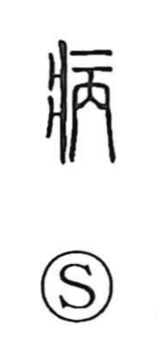

病

Kun: yamu, yamai | On: byo, hei
illness ・ disease ・ to fall ill ・ weariness ・ grief
Explanation
病 combines 疒, illness, with 丙 as its sound element. Its early sense is an illness that has become more severe: the ailment advances, and the person is now seriously affected by it. 病 describes the condition in which the illness has placed someone.
The word broadens to sickness generally and the act of falling ill. It can also describe a person worn down by worry, grief, or exhaustion. In each case, an affliction has become strong enough to impair the person’s condition. Applied beyond the body, the same weakening gives senses of damage, failure, or a serious defect.